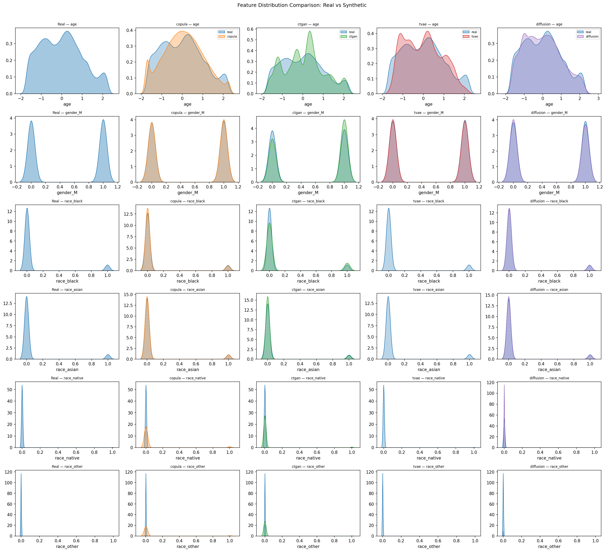
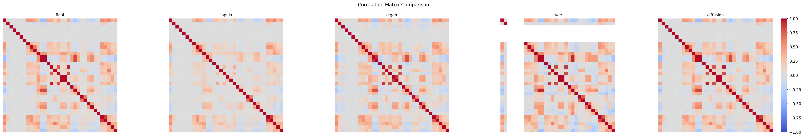
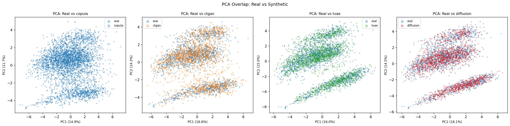
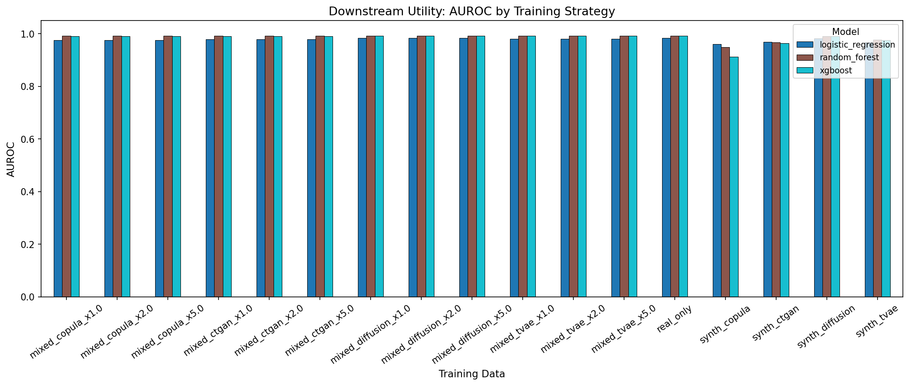
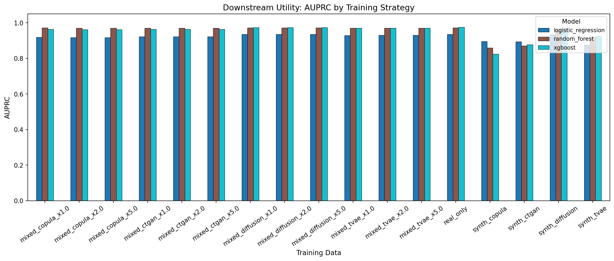
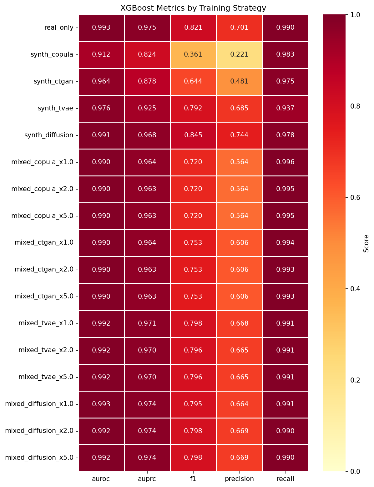
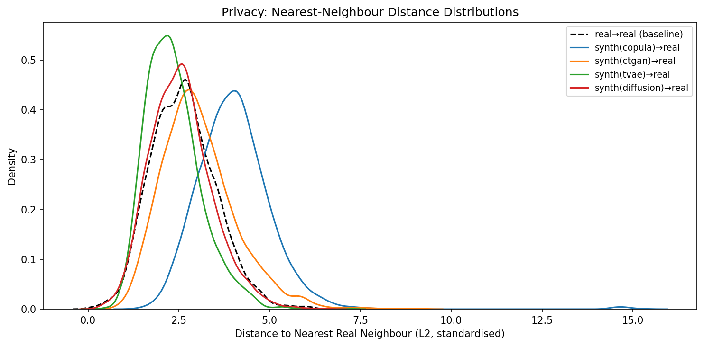

Can AI-generated patient records replace real health data?
A four-model benchmark on Synthea COVID-19 EHR data.
124,150 patients · 35 features · AWS SageMaker training
Synthea generates realistic synthetic patient records. We used the COVID-19 module — patients with conditions, encounters, vitals, medications, and outcomes.
DECEASED — predict patient death from
demographics, conditions, encounter history, and vitals.
Synthea stores data across 8+ relational tables. We joined them into a single patient-level feature vector.
str.contains() with default
regex=True misinterpreted condition keywords like
"Body mass index 30+" and "Anemia (disorder)" as
regex patterns — causing 7 condition columns to be all-zero.
Fixed with regex=False.
regex=False to all str.contains() calls. Marked all binary columns as categorical in SDV metadata to prevent TVAE dimensional collapse.encounter_inpatient KS = 0.677 — zero-inflated distribution that generators can't replicate. Also found 14–16% synthetic DECEASED rate vs real 19.5%.log1p to 6 count/monetary columns before StandardScaler. Added post-hoc DECEASED rebalancing to match real positive rate.All four models trained as parallel SageMaker Training Jobs — no waiting for one to finish before the next starts.
ml.m5.4xlargeml.m5.4xlarge (CPU fallback)| Generator | KS Mean ↓ | KS Max ↓ | Wasserstein Mean ↓ | Corr Distance ↓ |
|---|---|---|---|---|
| Copula | 0.111 | 0.678 | 0.126 | 3.237 |
| CTGAN | 0.100 | 0.678 | 0.075 | 1.652 |
| TVAE | 0.108 | 0.678 | 0.094 | 3.245 |
| TabDDPM | 0.050 | 0.350 | 0.034 | 0.503 |
KS and Wasserstein measure per-column distribution distance. Correlation distance measures how well inter-feature relationships are preserved. Discriminator AUROC = 1.0 is a known ceiling for zero-inflated tabular EHR data.



If a model trained purely on synthetic data can classify real patients, the synthetic data carries genuine predictive signal.
| Training Data | Best AUROC ↑ | Best AUPRC ↑ | Best F1 ↑ |
|---|---|---|---|
| Real Only | 0.9926 | 0.9746 | 0.9155 |
| Copula | 0.9603 | 0.8956 | 0.7295 |
| CTGAN | 0.9680 | 0.8938 | 0.7903 |
| TVAE | 0.9769 | 0.9246 | 0.8097 |
| TabDDPM | 0.9906 | 0.9679 | 0.8949 |
| Real + Diffusion | 0.9926 | 0.9744 | 0.9139 |



| Generator | Exact Duplicates | NN Mean Distance | NN Median Distance | Memorized Rare Records |
|---|---|---|---|---|
| Copula | 0 | 4.03 | 3.97 | 0 |
| CTGAN | 0 | 3.05 | 2.92 | 0 |
| TVAE | 0 | 2.35 | 2.26 | 0 |
| TabDDPM | 0 | 2.56 | 2.52 | 0 |

Based on Kotelnikov et al. (2023). Adapts image diffusion (DDPM) to tabular data.
regex=True default wiped out 7 condition columns. Clean flattening mattered more than model architecture for the first two runs.